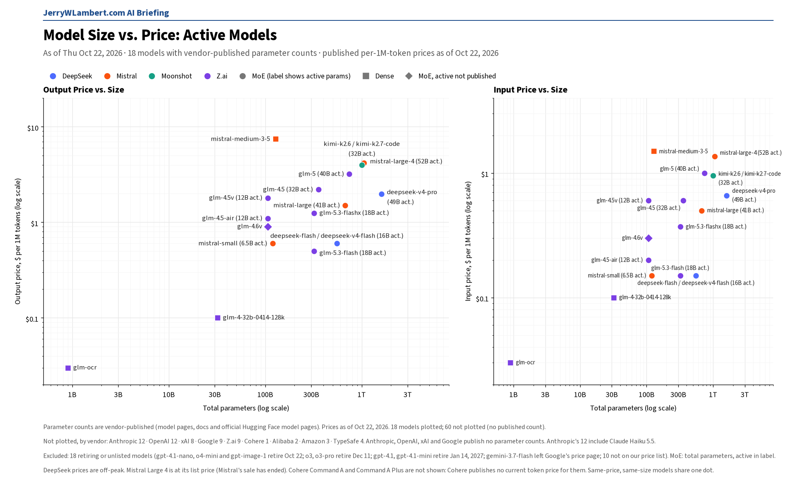
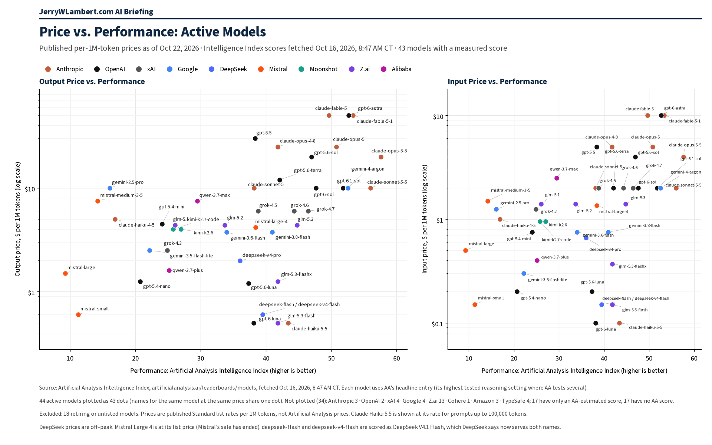

Daily Model Brief, October 22, 2026
No vendor changed a token price on any model I track today. Alibaba listed Qwen3.8-27B at $0.50 input and $3.00 output per million tokens, and OpenAI's gpt-4.1-nano, o4-mini and gpt-image-1 stop at 7:00 PM CT tonight.
Download PDF SubscribeExecutive Summary
No token price changed today on any model I track. Anthropic, OpenAI, Google, xAI, DeepSeek (peak and off-peak), Moonshot, Z.ai, MiniMax, Mistral, Alibaba, Meta, TypeSafe, Xiaomi, Tencent and StepFun all show the same prices as Wednesday. Mistral Large 4 stays at its $1.36 input, $0.14 cached and $4.18 output list price.
Alibaba's Model Studio page for Qwen3.8-27B (qwen3.8-27b) lists international prices of $0.50 input, $3.00 output, $0.10 for implicitly cached input, $0.625 for explicit cache creation and $0.05 for explicit cache reads, per million tokens. Alibaba says those prices exclude limited-time promotions. The model is also trending on Hugging Face.
Cohere's pricing page lists token prices only for legacy models, "for existing customers" (Command R 03-2024 at $0.50 input / $1.50 output; Command R+ 08-2024 at $2.50 / $10.00). It shows no token price for Command A, Command A Plus or the current Command R, so I no longer chart Command A or Command A Plus.
Two shutdowns land today. OpenAI's gpt-4.1-nano, o4-mini and gpt-image-1 stop at 7:00 PM CT (OpenAI lists October 23; that is midnight UTC). Google's deprecations page lists gemini-omni-flash-preview and three Veo 3.1 preview models shutting down today, with no time of day. Microsoft's Foundry retirement page now dates Llama-4-Maverick-17B-128E-Instruct-FP8 for November 19, 2026 and Llama-3.3-70B-Instruct for January 31, 2027, and moved mistral-small-2503 from December 9, 2026 to February 15, 2027.
Anthropic released API version 2026-10-21 with new SDKs that send it by default (Python SDK 2.0.0, TypeScript SDK 1.0.0 and others), now licensed under Apache 2.0, and organization admins can now turn off web fetch. OpenAI now lets organizations restrict which service tiers each project can use. Z.ai listed GLM-5.3-FlashX-Legal at $0.37 input, $0.075 cached and $1.25 output, with API access only for selected enterprise customers by application. None of these changes a price you pay today.
Amazon's Bedrock price pages and ByteDance's price page still could not be read, Microsoft's Foundry catalog lists no pay-as-you-go prices, and IBM's model docs returned 403 (IBM's price page is unchanged). The performance chart still uses Artificial Analysis scores from October 16, the last complete leaderboard read; today's read was again incomplete.
What This Means for Customers
- If you still call
gpt-4.1-nano,o4-miniorgpt-image-1, switch before 7:00 PM CT today. OpenAI namesgpt-5.6-luna,gpt-5.6-terra, andgpt-image-2.5-sunburstorgpt-image-2.5-flareas replacements. - If you still call
gemini-omni-flash-previewor a Veo 3.1 preview model, move togemini-omni-1.1-flashnow. Google's shutdown date is today and it gives no time of day. - If you are pricing a mid-size open model, Qwen3.8-27B lists at $0.50 input and $3.00 output on Alibaba's international pricing. Explicit cache reads are $0.05, half the $0.10 implicit-cache rate, so check which cache mode your client uses.
- If you budget Cohere's Command A or Command A Plus, get a written price from Cohere. Its public pricing page lists no token price for either model.
- If you run Llama-4-Maverick-17B-128E-Instruct-FP8 on Azure Foundry, plan a move before November 19, 2026; Llama-3.3-70B-Instruct follows on January 31, 2027. If you run mistral-small-2503 there, you now have until February 15, 2027.
- If you call Anthropic's API through the new SDKs, they send API version 2026-10-21 by default and carry breaking changes of their own; read Anthropic's migration guide before upgrading.
- Google's deep-research-pro preview ends October 23, and Perplexity retires its routes to older OpenAI models at 7:00 PM CT on October 23.
- If your agents search the web through DeepSeek Harness, Claude Code or Codex, those server-side calls start billing at $0.75 per 1,000 successful Search or Fetch requests at 11:00 AM CT on Saturday, October 31. Track this separately from token spend.
- Claude Haiku 4.5 is still active. Anthropic lists retirement not sooner than October 15, 2026, a date that has passed, and still sets no date. Keep a tested fallback ready.
New Models and Price Changes
Prices in USD per 1M tokens.
| Vendor | Model ID | Status | Input | Cached | Output |
|---|---|---|---|---|---|
| Alibaba | qwen3.8-27b | Newly priced (International). Implicit cache $0.10; explicit cache creation $0.625; explicit cache read $0.05. | $0.50 | $0.10 | $3.00 |
| Z.ai | glm-5.3-flashx-legal | Newly listed. API access for selected enterprise customers by application. | $0.37 | $0.075 | $1.25 |
| Cohere | command-a / command-a-plus / command-r | No token price on Cohere's pricing page. Legacy prices only, for existing customers. | Not listed | Not listed | Not listed |
| Cohere | Command R 03-2024 (legacy) | Listed for existing customers. | $0.50 | — | $1.50 |
| Cohere | Command R+ 08-2024 (legacy) | Listed for existing customers. | $2.50 | — | $10.00 |
| Mistral | mistral-large-4 | Unchanged at list price (sale ended Oct 21). | $1.36 | $0.14 | $4.18 |
| Mistral | mistral-large (Mistral Large 3) | Unchanged. | $0.50 | — | $1.50 |
| Alibaba | qwen3.7-max | Unchanged. Cached input is 20% of input. | $2.50 | $0.50 | $7.50 |
| Alibaba | qwen3.8-max | Unchanged. | $2.00 | — | $6.00 |
| Alibaba | qwen3.6-35b-a3b | Unchanged. | $0.375 | — | $2.25 |
| Moonshot | kimi-k3 | Unchanged. 5-minute cache write $3.00; 1-hour cache write $6.00. | $3.00 | $0.30 | $15.00 |
| DeepSeek | deepseek-flash | Unchanged. Off-peak price shown (peak $0.30 / $0.006 / $1.20). | $0.15 | $0.003 | $0.60 |
| DeepSeek | deepseek-v4-pro | Unchanged. Off-peak price shown (peak $1.32 / $0.044 / $3.96). | $0.66 | $0.022 | $1.98 |
| DeepSeek | Search API / Fetch API | Unchanged. Billing for calls through DeepSeek Harness, Claude Code and Codex starts Oct 31, 11:00 AM CT. $0.75 per 1,000 successful requests each. | Per request | — | Per request |
| Tencent | Hy3 | Unchanged. | $0.132 | $0.033 | $0.528 |
| TypeSafe | jev-1.13.0 / jev-1.14.0 | Unchanged. jev-latest and jev-preview aliases; output free. | $0.042 | — | $0 |
| IBM | granite-4-h-small | Unchanged. Model docs returned 403 today. | $0.0636 | Not listed | $0.265 |
- No tracked token price changed today. Every price above was checked against the vendor's own page this morning.
- Alibaba also lists qwen3.8-2.4t-a95b, qwen3.8-flash and qwen3.8-omni-flash; I have not confirmed their prices and do not show them here.
- Z.ai still marks cached input storage as limited-time free, and Xiaomi still marks cache writes as limited-time free; neither gives an end date.
- Anthropic's October 21 release notes add enforcement_status and enforcement_actions fields to user profiles, so a platform can see whether Anthropic has restricted or banned one of its end customers. No price change.
- Amazon's Bedrock price pages could not be read today (they land on an overview page with no prices), ByteDance's price page showed only its "Last updated October 19, 2026" line, Microsoft's Foundry catalog lists no pay-as-you-go prices, and IBM's supported-models docs returned 403. Their last confirmed prices stand.
Deprecations
| Vendor | Model ID | Shutdown (CT) | Replacement | Note |
|---|---|---|---|---|
| OpenAI | gpt-4.1-nano o4-mini gpt-image-1 | Thu Oct 22, 2026, 7:00 PM CT | gpt-5.6-luna gpt-5.6-terra gpt-image-2.5-sunburst or gpt-image-2.5-flare | Today. OpenAI lists Oct 23 with no time; 7:00 PM CT Oct 22 is 00:00 UTC Oct 23. |
| gemini-omni-flash-preview | Thu Oct 22, 2026 (time not stated) | gemini-omni-1.1-flash | Today. | |
| veo-3.1-generate-preview veo-3.1-fast-generate-preview veo-3.1-lite-generate-preview | Thu Oct 22, 2026 (time not stated) | gemini-omni-1.1-flash | Today. | |
| deep-research-pro-preview-12-2025 | Fri Oct 23, 2026 (time not stated) | deep-research-preview-04-2026 | Unchanged. Tomorrow. | |
| Microsoft (Azure) | Llama-4-Maverick-17B-128E-Instruct-FP8 | Thu Nov 19, 2026 (time not stated) | None named | New date on Microsoft's Foundry retirement page (no date listed Wednesday). |
| Microsoft (Azure) | Ministral-3B mistral-medium-2505 | Wed Dec 9, 2026 (time not stated) | ministral-ministral-4b-instruct mistral-medium-3-5 | Unchanged. Applies to Azure deployments, not Mistral's own API. |
| Microsoft (Azure) | mistral-small-2503 | Mon Feb 15, 2027 (time not stated) | mistralai-mistral-small-4-119b-2603 | Moved from Dec 9, 2026. Microsoft says it deprecated the model on Oct 9, 2026. |
| OpenAI | gpt-4.1 (gpt-4.1-2025-04-14) gpt-4.1-mini (gpt-4.1-mini-2025-04-14) | Wed Jan 13, 2027, 6:00 PM CT | gpt-6-luna | Unchanged since Oct 14. OpenAI lists Jan 14, 2027 with no time; 6:00 PM CT Jan 13 is 00:00 UTC Jan 14. |
| OpenAI | gpt-4o-2024-08-06 gpt-4o-2024-11-20 gpt-4o-mini-2024-07-18 | Wed Jan 13, 2027, 6:00 PM CT | gpt-6-luna | Unchanged since Oct 14. Fine-tuned versions follow the same schedule. |
| Microsoft (Azure) | Phi-4 Phi-4-mini-instruct Phi-4-mini-reasoning Phi-4-multimodal-instruct | Sun Jan 17, 2027 (time not stated) | microsoft--phi-4 (Foundry Managed Compute) | Unchanged since Wednesday. Applies to Azure Foundry deployments. |
| Microsoft (Azure) | Llama-3.3-70B-Instruct | Sun Jan 31, 2027 (time not stated) | None named | New date on Microsoft's Foundry retirement page (no date listed Wednesday). |
| gemini-3.1-flash-tts-preview gemini-2.5-flash-preview-tts gemini-2.5-pro-preview-tts | Tue Nov 17, 2026 (time not stated) | gemini-3.8-flash-tts or gemini-3.8-flash-lite-tts | Unchanged. | |
| gemini-3.1-flash-live-preview gemini-2.5-flash-native-audio-preview-12-2025 | Tue Nov 17, 2026 (time not stated) | gemini-3.8-live | Unchanged. | |
| Anthropic | claude-sonnet-4-5-20250929 | Mon Nov 30, 2026 (time not stated) | claude-sonnet-5-5 | Unchanged. |
| Anthropic | claude-haiku-4-5-20251001 | Not sooner than Thu Oct 15, 2026; no date set | None named | Watch item. The earliest date has passed; still active on Anthropic's deprecations page today with no date set. |
| gemini-3.5-flash gemini-3.7-flash | Not shutting down (Google lists N/A) | gemini-3.6-flash / gemini-3.8-flash (Google auto-route) | Unchanged since Oct 12. Google routes requests automatically. | |
| Cohere | command-r command-r-plus | Deprecated Sep 15, 2025; no shutdown date set | command-r-08-2024 command-r-plus-08-2024 command-a-03-2025 | Closed to new customers; existing users keep access until retirement. |
- Microsoft's Foundry retirement page also lists Cohere-embed-v3-english and Cohere-embed-v3-multilingual as deprecated on November 15, 2026, and still lists claude-opus-5-5-fast (version 2) on Azure retiring Fri Jan 15, 2027.
- Perplexity will retire its Agent API and Orchestrator API routes to older OpenAI models (openai/gpt-5.4, gpt-5.4-mini, gpt-5.4-nano, gpt-5.2, gpt-5.1, gpt-5 and gpt-5-mini) at 7:00 PM CT on Fri Oct 23, 2026 (00:00 UTC Oct 24). Unchanged.
- OpenAI's earlier notices are unchanged: gpt-5.3-codex, gpt-5.1 and gpt-5.4-nano shut down April 1, 2027, and the /v1/audio/translations endpoint shuts down February 26, 2027, replaced by v1/realtime/translations.
- No other shutdown dates moved since Wednesday at Anthropic, Google or OpenAI.
Agent Platforms
Hosted AI agents that come with their own persistent cloud computer. Each line comes from the maker's own pages, read this morning.
- Grok Bot: its own persistent cloud computer, one per user, with no separate computer charge found; usage comes from a weekly pool, then prepaid top-ups. No change since its October 14 release.
- dots (OpenAI): OpenAI says a dot "has its own cloud computer"; the first dot comes with Pro and Business Premium "at no extra cost." Runs on GPT-6 Astra. No pricing change.
- Muse (Meta): "You and your Muse share your own dedicated computer in the cloud." Runs on Muse Spark 1.3, whose API price is unchanged at $1.25 input, $0.15 cached and $4.25 output per million tokens. Billing is unverified today; Meta's subscription page did not load.
- Manus: ordinary tasks get a temporary sandbox; the Cloud Computer add-on is a persistent server billed separately at $30 a month (2 vCPU, 4 GB) or $50 a month (2 vCPU, 8 GB). No change.
- Genspark Claw: a "dedicated cloud computer provisioned just for you," billed separately as a Lite, Standard or Powerful Cloud Computer subscription plus credits; Genspark's help page gives no dollar amounts. Page re-laid out; no substantive change.
Model Size vs. Price

Across the 18 active models whose vendors publish parameter counts, price rises with total size (rank correlation 0.62 on output price). Anthropic, OpenAI, xAI and Google publish no parameter counts, so their models are not plotted. Cohere's Command A and Command A Plus are no longer shown (no current Cohere token price); that removal, not a price change, raised the correlation from 0.41. Prices as of October 22, 2026.
Price vs. Performance

Across the 44 active models with a measured Artificial Analysis Intelligence Index score, price rises with performance only loosely (rank correlation 0.49 on output price). Claude Haiku 5.5 leads at $0.50 or less (43.4); GPT-6.1 Sol scores 51.8 and Gemini 4 Argon 52.6, each at $10. Scores as fetched October 16, 2026, 8:47 AM CT, the most recent complete leaderboard read (today's read was incomplete); prices as of October 22, 2026.
All times Central. Vendor prices, dates and model IDs are taken from first-party vendor pricing, model, deprecation and changelog pages as of 8:45 AM CT on October 22, 2026. Chart prices are as of October 22, 2026. Performance scores are from the Artificial Analysis Intelligence Index, fetched 8:47 AM CT on October 16, 2026 (the most recent complete leaderboard read). Agent platform details come from each maker's own help, blog and pricing pages. Items that could not be confirmed are marked unverified.